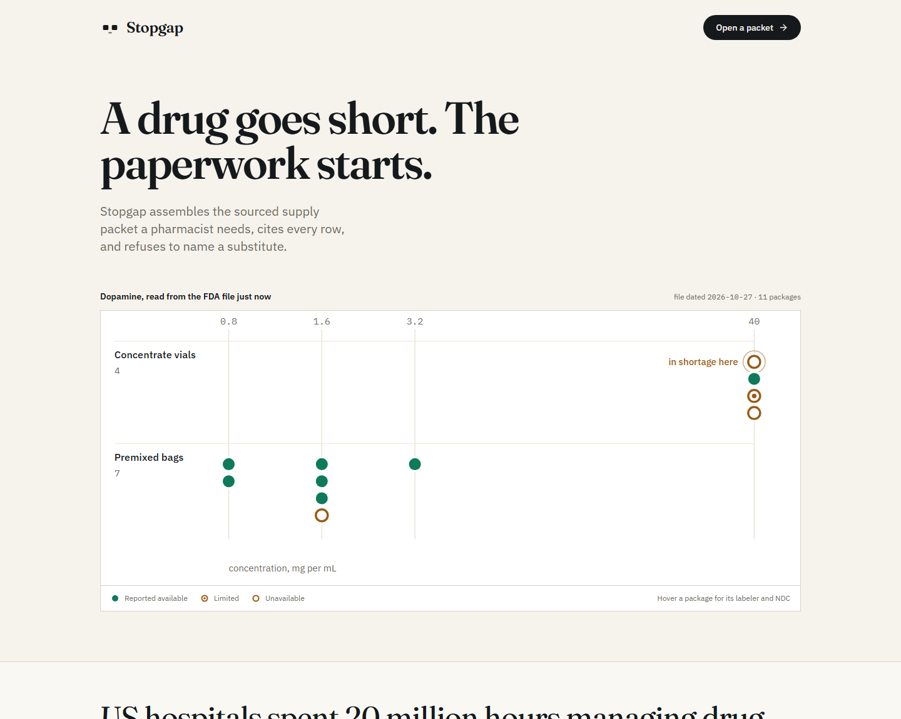
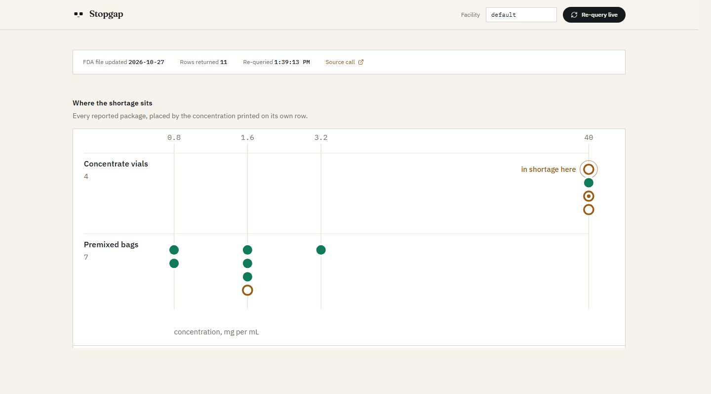

Stopgap
A drug goes short.
The paperwork starts.
Stopgap drafts the sourced supply packet a hospital pharmacist needs, cites every row, and refuses to name a substitute.
Open Agent Hackathon 2026 · Track 02, The Agent That Can Explain Why
stopgap-rx.vercel.app
A shortage notice is not an answer. It is the start of an afternoon.
20M
hours US hospitals spent managing drug shortages in 2023
$900M
the labour cost of those hours, across 132 health systems
69.7%
of hospital pharmacy professionals still track shortages on spreadsheets
Vizient, released 17 June 2025 · Bluesight, 437 respondents surveyed January–February 2026
One ingredient, on the day we built it
Dopamine, read live from the FDA shortage file on 27 October 2026. Eleven packages. Four are the concentrate; seven are premixed bags at entirely different concentrations.
| Package NDC | Labeler | Status | What the file says |
|---|---|---|---|
| 0143-9254-25 | Hikma | Unavailable | Resupply November 2026. The pinned row. |
| 0143-9252-25 | Hikma | Unavailable | Backorder into February 2027 |
| 0409-9104-20 | Hospira | Limited | Recovery estimated March 2027 |
| 0409-5820-01 | Hospira | Available | Updated 21 October 2026 |
Two of the four share the pinned labeler. Only one package is fully available.
The packet
Every row carries its labeler, package NDC, availability, the date the FDA row changed, the manufacturer's own resupply note, its RxNorm concept and a link to its FDA label on DailyMed.
A judge can click any citation and land on the source.
The page reads the file when you open it. Press re-query and the timestamp moves.

The rule that makes it safe
Rows are split by the concentration printed on each individual row, so a 40 mg per mL concentrate vial never merges with a premixed dextrose bag. There is no ingredient-level join anywhere in the code, because an ingredient join merges exactly those two things.

Availability carries three marks, not two colours, so the state survives colour blindness and printing.
It will not tell you what to give the patient.
Same ingredient is not the same product. Route, indication, dosing and contraindications are not checked by anything here. The clinical conclusion field is empty by construction.
Pharmacist signature
Date
openFDA's "do not rely on this for medical care" sentence and the NLM attribution are printed on the packet itself.
Architecture
Sources, keyed on package NDC
openFDA shortages
RxNorm, via NLM RxNav
DailyMed labels
Never joined on drug name.
Packet engine
Groups by the concentration printed on each row. Applies stored decisions. Leaves the clinical line empty.
Hono, one codebase, served both as a local node server and as one Vercel function.
The packet
Cited rows, an excluded section that names its decision, and a blank signature.
Zetaris registers the same FDA endpoint as a Lightning REST table and queries it in place, beside the engine.
Meterless H-MEM holds the pharmacy's own decisions and the ledger behind them.
Nemotron drafts one sentence: the refusal.
A pnpm workspace. The deployed site and the local one serve identical routes.
Zetaris
One Lightning REST table over the FDA endpoint, and a SchemaStore view that explodes results so each package becomes a row, split by presentation. Queried in place. Nothing copied into a warehouse.
What surprised us
The join key never had to exist. We expected a second source keyed on RxCUI to separate the vial from the bag. The presentation string already on each row did it, and one REST table was the entire data layer.
Verified, not described
A real run against a local instance is committed in the repository: 11 rows, recorded 27 October 2026.
A hosted deployment cannot reach a laptop, so the site serves that captured run labelled as recorded, never as live.
The registration caches the response for the session so the demo is reproducible. The packet makes its own independent call to the same file.
Meterless
The H-MEM reference engine holds the pharmacy's own decisions, each with the name of whoever entered it and an append-only ledger entry behind it.
Run one
Seven premixed bags listed as other presentations.
A pharmacist decides
“This hospital does not stock premixed dextrose bags.”
Run two
All seven move, each naming the decision id that removed it.
A row excluded by a pharmacy decision is not a row that is out of stock. The packet never lets those two look alike.
NVIDIA Nemotron
One sentence, and only one: the line that tells the reader this packet reports supply and the clinical decision belongs to the pharmacist. Hosted on build.nvidia.com, running nemotron-3.5-lightning-30b-a3b.
Two things we had to learn
The model ids in circulation are wrong. Only the live catalogue is reliable.
The 3.5 family reasons by default and spends the whole budget on reasoning, returning an empty message, so the call turns thinking off.
It fails loudly
With no key, or on any error, the sentence is omitted and the omission is printed on the page.
A packet that invents its own disclaimer is worse than one that admits a model did not answer.
The model writes the refusal. It never writes a row, a status or a recommendation.
What we are not claiming
Not the first
rx-shortage-mcp does class-sibling lookups, RxFinder joins the shortage file to pricing, and Bluesight and Vizient sell into this market.
Not comprehensive
One ingredient and one endpoint today. Pricing was dropped: the 2026 acquisition-cost file 404s, and another tool already joins it.
Not clinical
Same class is not the same drug. Route, indication, dosing and contraindications are checked by nothing here.
The wedge is narrow on purpose: a cited draft packet that deliberately refuses to name a substitute.
What we would build next
Any ingredient
Pinned to one today. The engine already keys everything on package NDC, so the pin is a parameter, not a rewrite.
The real formulary
A second Zetaris source, so other presentations can be filtered against what the hospital actually stocks rather than a typed rule.
A shared decision history
The committee's decisions as a Meterless world model across sites, instead of one store per facility.
stopgap-rx.vercel.app · github.com/AustinChris1/stopgap